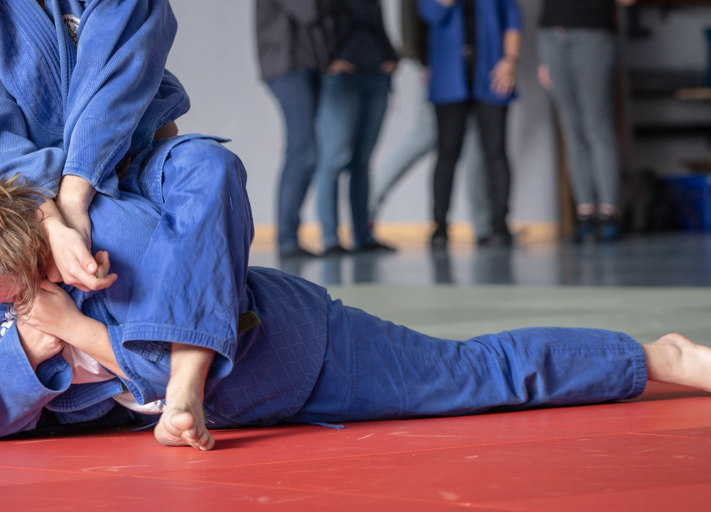
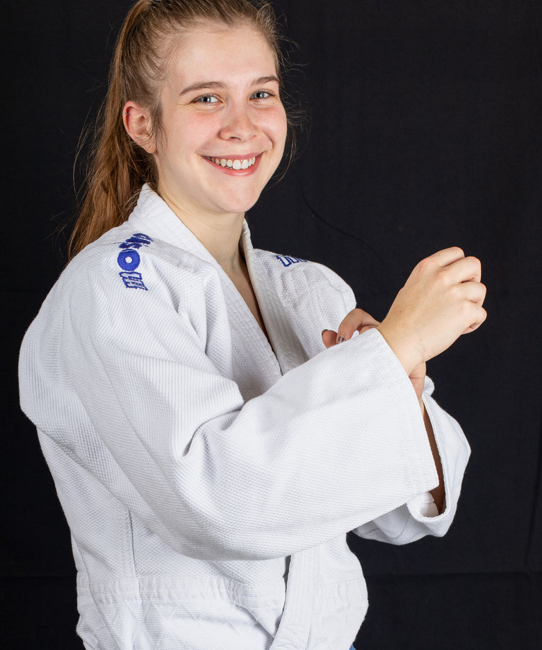
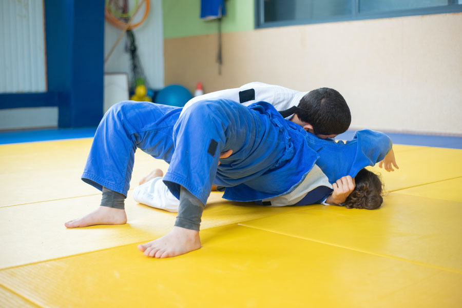
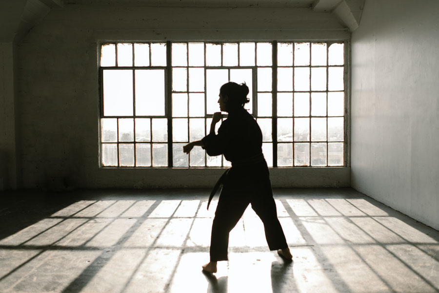

Patrick Schmitz
Trainer für Jugendliche und Erwachsene
- Ehemaliger Wettkämpfer
- Norddeutscher Meister und Landesmeister
- Übungsleiterlizenz · 1. Kyu
Judo für alle ab 4 Jahren
Seit über 30 Jahren Judo in Bruchhausen-Vilsen – heute mit mehr als 80 gemeldeten Judoka in unserem Team.

Was ist Judo?
Jeder Judoverein hat seine eigene Idee vom Judo. Unser Training basiert auf fünf Aspekten:
Über uns
Seit über 30 Jahren gibt es Judo in Bruchhausen-Vilsen. Heute gehören mehr als 80 gemeldete Judoka zum Judo-Team.
Ob Gürtelprüfungen, Selbstverteidigung, Beweglichkeit oder Wettkampfjudo: Unser gut ausgebildetes Trainerteam unterstützt dich bei deinen Zielen.
Trainer für Jugendliche und Erwachsene

Trainerin für Kinder, Jugendliche und Erwachsene
Jacqueline Schumann, Ines Kämmerer und Stephanie Schmitz – unterstützt von engagierten Eltern.
Trainingszeiten
Ab 4 Jahren
Ab 6 Jahren
Ab 10 Jahren
Ab 13 Jahren
Trainingsort
Probetraining
Pack deine normalen Sportsachen ein und komm mittwochs oder freitags um 16:00 Uhr in die große Sporthalle am Schulzentrum. Du kannst dreimal zum Probetraining kommen, bevor du dem Verein beitreten musst.
KontaktDanach ist für weiteres Training der Eintritt in den Verein nötig.
News
Berichte des Judo-Teams Bruchhausen-Vilsen aus den Jahren 2022 und 2023.

Beim Ranglistenturnier des Kreisfachverbands in Barnstorf starteten acht Judoka unseres Teams in U9, U11 und U15. Sie holten sechs Gold- und zwei Silbermedaillen.

Bei einem Turnier mit rund 250 Kindern erkämpfte das Team eine Gold-, zwei Silber- und drei Bronzemedaillen.

Unsere Kinder starteten beim Newcomer Cup in Bremen in den Altersklassen U9, U11 und U13. Für alle war es das erste Turnier. Sie holten zwei Gold-, zwei Silber- und vier Bronzemedaillen.

Beim International Elephant Cup in Schleswig-Holstein gewann Janine Schmitz Gold. Im Finale besiegte sie die Drittplatzierte der Deutschen Meisterschaft.

Als Landesmeisterin vertrat Janine Schmitz Bremen bei den Norddeutschen Meisterschaften und gewann Bronze. Bei den Deutschen Meisterschaften belegte sie den siebten Platz.
Kontakt
Bei Fragen zum Training oder Probetraining erreichst du Jacqueline Schumann telefonisch oder per E-Mail: